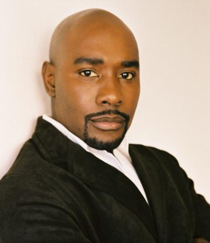
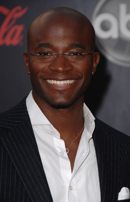
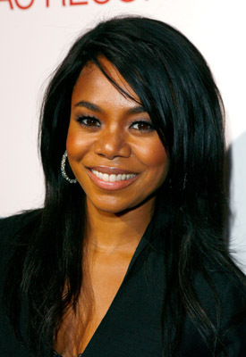
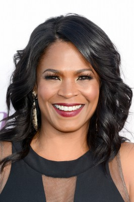
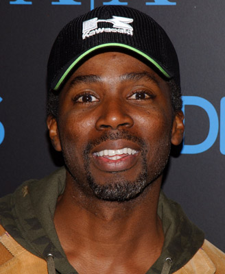
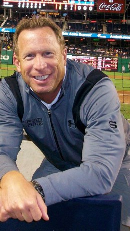
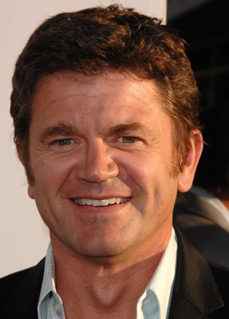

#3156 Urlaub mit Hindernissen - The Best Man Holiday
Alternativ: The Best Man Holiday

 IMDB-Wertung: 6.7 / 10
IMDB-Wertung: 6.7 / 10  Metascore: 59
Metascore: 59 
Es sind Weihnachtsferien und einige Freunde treffen nach fünfzehn Jahren erstmals wieder zusammen. Lance ist mittlerweile ein Profi-Footballer kurz vor dem Ruhestand, Jordan eine erfolgreiche Fernsehproduzentin, Shelby hat es zum Star eines trashigen Reality-Formats über Hausfrauen geschafft und Quentin ist ein wohlhabender PR-Berater, der noch immer sein Junggesellenleben genießt. Doch so perfekt läuft es nicht für jeden: Harper hat Probleme mit dem Verfassen seines zweiten Buchs und sieht sich der großen Herausforderung eines Babys gegenüber, nachdem seine Frau Robyn einige Fehlgeburten hatte. Murch hat die Gelder für seine Schule nach dem Erscheinen eines freizügigen Videos seiner Frau Candy entzogen bekommen. Als Lance und Gattin Mia nun alle in ihre Bleibe einladen, um gemeinsam Weihnachten zu feiern, kommen viele Spannungen an die Oberfläche, die sowohl Ehen als auch Freundschaften infrage stellen lassen.
Jahr: 2013
Dauer: 123 Minuten
FSK: 12
Land: USA Studio: Universal PicturesTonspuren: DTS - ,
Untertitel: Deutsch,
Auflösung: 1080p (1920x800) Größe: 5304 MB
Genre: Drama, Komödie, Weihnachten
Regisseur: Malcolm D. Lee
Drehbuch: Malcolm D. Lee, Malcolm D. Lee
Soundtrack: Stanley Clarke
Darsteller:
- Monica Calhoun als Mia
-  Morris Chestnut als Lance
- Melissa De Sousa als Shelby
-  Taye Diggs als Harper
-  Regina Hall als Candace
 Terrence Howard als Quentin
Terrence Howard als Quentin Sanaa Lathan als Robyn
Sanaa Lathan als Robyn-  Nia Long als Jordan
-  Harold Perrineau als Julian
- Eddie Cibrian als Brian
- Riele Downs als Faith
- Richie Lawrence als August
- Millie Davis als Hope
- Linden Liles-McCurdy als L J
- Shailyn Pierre-Dixon als Kelly
- Allison Augustin als Keisha
- Catherine Bruhier als Dr. Perkins
-  Mark Robert Ellis als Coach
- Eddie George als Himself
- Marsha Ambrosius als Herself
- Anthony Hamilton als Himself
- Elle Downs als Newscaster
 Chris Williams als Dr. Nelson
Chris Williams als Dr. Nelson- Justin T. Bowler als Sports Announcer
- Shailene Garnett als Jordan's Assistant
- Peter Gilroy als P.J.
-  John Michael Higgins als Stan
- Haley Powell als Kid
- Marlon Price als #26 Atlanta Falcons
- Terrell Ransom Jr. als Kid
- Yvette Saunders als
- Tamara Almeida als Hot Co-Worker , uncredited
- Tyler Cheman als Stadium Patron , uncredited
- Lisa Michelle Cornelius als Reality Show Star , uncredited
- Austin Davis als NY Giant Defensive Lineman , uncredited
- Michael Dugan als New York Giants Running Backs Coach , uncredited
- Angel Izard als Football Fan , uncredited
- Atif Lanier als NY Giants Defensive Back , uncredited
- Sherri Lyn Litz als Football Fan , uncredited
- Colin Reboy als Ball Boy , uncredited
- Renes Rivera als Bellingham, Falcons Nose Guard , uncredited
- Greg Robbins als Defensive Coach , uncredited
- Miles Stroter als Lonnie, Lance's Best Friend On Team #77 , uncredited
- Isis Moore als Kennedy
- Paulina Abarca-Cantin als Esmerelda
- Julianna Barclay als Homeless Woman
- David Schurmann als Elliot
- Pam Oliver als Herself
- Greg Gumbel als Himself
- Linda V. Carter als Mia's Mom
Datei: X:\2013(N-Z)\Urlaub mit Hindernissen - The Best Man Holiday (2013, FSK12, 1920x800).mkv seit 06.02.2016
Festplatte: HD 2013(I-Z)-2014(A-Z)
 Es gibt insgesamt 133 Filme in der Gruppe '2013(N-Z)'
Es gibt insgesamt 133 Filme in der Gruppe '2013(N-Z)'